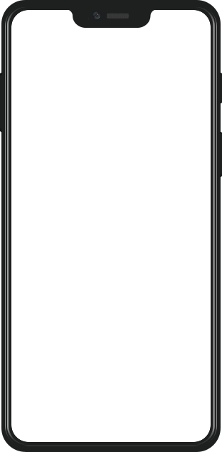
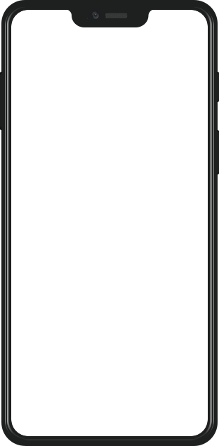

Popular Streaming Platforms
Overview
The concept/application was designing an over-the-top media streaming platform (MSP). This platform will allow its users to stream a wide variety of content such as Movies and TV Shows based on their genre/niche preferences.
Problem Statement
The top accessibility issues on streaming services are, captions and subtitles, audio description, flashing images, and navigating the streaming services.
Reports state that more than 47% of UK homes have a subscription to either Netflix, Prime Video or Disney +. Regardless, disabled people say they feel “forgotten” and “excluded” by streaming services due to inaccessible issues. Missing out on the latest film or TV series due to poor accessibility features is not just about missing out on the content. It’s about being excluded from the overall conversation and culture around it.
Solution
The application will improve the overall usability, provide and capture a cinematic experience for all including individuals that are less fortunate than others.
Target Audience
The target audience for the application aims to be students and young professionals around the ages of 25 – 35 years old who wish to have a good cinematic experience whilst having great usability.
Role and Scope
Role: UX/UI Designer
Scope: 4 Week Design
Tools
-
Figma
-
Adobe XD
-
Miro
-
Microsoft Teams
Design Process
The Process
In order to have best approach the redesign I used the 'Design Thinking' UCD process which is split into five parts:
Discover - Focus on understanding user and research apporach
Define - Defining pain points from research and coming up with solutions
Ideate - Sketches of ideas and wireframes
Prototype - Development of an interactive prototype
Test - Testing of prototype and understanding feedback from users
The Design Thinking process was chosen because of its emphasis on problem solving by prioritising the needs of the user over all other considerations. It is based on the practise of observing people's interactions with their enviroment with empathy. Furthermore, it takes an iterative, hands-on approach to developing creative solutions.
Discover
Popular platforms for inspiration
The current streaming platforms which were used for inspiration were Netflix, Disney Plus, Amazon Prime Video, and HBO Max. How these inspirations were incorporated into my designs will be discussed in the UCD design section (Personas).

Apple Store Review of the Zara App
Research
I conducted research by using the reviews customers have left on the App Store. This approach felt more effective a users of the app gave their own account of their experiences with Zara App without asking users targeted questions through a 1:1 interviews. The App Store also provided a mixture of quantitative data (ratings of the app) and qualitative feedback (particular pain points and frustration of the app)
Define

Pain points notes
Findings
From the App Store review of the original Zara app, it became apparent from the reviews that there were a lot of frustrations from users on the lack of functionality and frustrations with the usability of the app.
Some of the main paint points I discovered were:
-
"App is tedious... and such hard work to use."
-
"Takes ages to navigate"
-
"...frustrating shopping experience"
-
" Hard to navigate through the app"

'How Might We' statement notes
Solution
After understanding some of the main pain points of the app from the research, I focused on identifying solutions that can address the main pain points of the app.
Using the "How Might We..." statement technique, I listed a few "How Might We" statement (pictured on the right) to see whether those statement addressed the main pain points.
As majority of the pain points centred around the navigation of the app, I went with "How might we better the navigation experience".

Personas
Based on the research conducted I also created a persona to understand the needs of the user more and understanding their motivations and frustration in order to tailor the app to users needs.
Ideate

Crazy 8's rough sketches
Sketches
I usually start the ideation process with some very rough and quick sketches using the Crazy 8's technique. This techniques is very effective as it allows me to create all kinds of rough sketches and ideas in a relative short time where I am able to assess them and choose which idea best address the problem on navigation.

Sketched out Wireframes of Navigation journey
Wireframes
Having created some rough sketches, I have taken some of these ideas and further fleshed them out into wireframes which focused on how users would navigate through the app.
Understanding the main purpose of a retail app is for users and customers to easily navigate to their desired product and proceed to adding the item to their baskets, I created wireframe to show how the new navigation would work.
Prototype

Interactive prototype design in Figma
Prototype
Using the wireframe above as guidelines, I proceed to create a testable prototype in Figma (left) with the testable prototype which can be seen below:
-
 
 -

-

-

-

-

-

-

-
-
-
-
-
-
-
-
-
Test

Usability test findings
User Testing
Before finalising the designs, I conducted a series of usability testing to test whether the redesign solved the issue around navigation the app and reveal any possible usability problems in the design.
I conducted the usability testing remotely with 3 participant who all fell within the target audience.
I gained some valuable insight from the usability testing which highlighted issues around:
-
"Navigation bar CTA's not clear as they should be"
-
"Separate search page needed"
-
"Navigation list of categories needed"

Iteration of final design - Figma
Iteration
From the insight gained from the usability tested I carried out iteration of the Zara App to address and resolve the issue found from the usability.
Final Design


What have I learned from the project?
Overall this was a personal project that I really enjoyed but also learned from unique circumstances.
-
One of my key learnings was from research, due to Covid-19 I found it a challenge getting actual live user interviews and not being able to validate assumptions through direct 1-1 interviews. Having looked at how I can gain user feedback without user interviews, I used user feedback from App Store reviews to compensate as user commented at their own will about issue they were having with the Zara App which more then compensated for the 1:1 interviews.